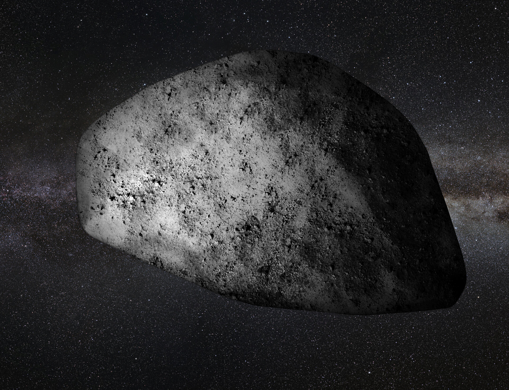
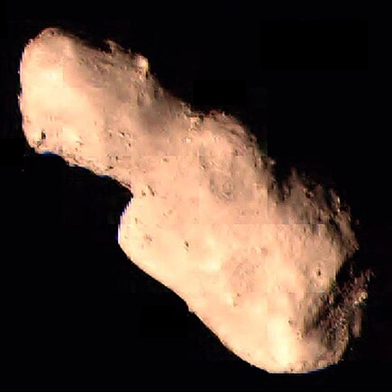
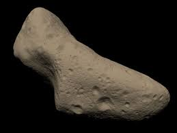

Apophis
Size: 340 meters
Closest Approach: April 13, 2029
Interesting Fact: Apophis was once feared to collide with Earth, but recent studies have shown no risk for the next 100 years.

Bennu
Size: 500 meters
Closest Approach: September 25, 2135
Interesting Fact: Bennu is the target of NASA’s OSIRIS-REx mission, which successfully collected a sample from its surface in 2020.

Toutatis
Size: 2.5 kilometers
Closest Approach: December 12, 2012
Interesting Fact: Toutatis is a large asteroid that approaches Earth every four years and has a tumbling, irregular motion.

Eros
Size: 16.8 kilometers
Closest Approach: January 31, 2012
Interesting Fact: Eros was the first asteroid to be orbited and landed on by a spacecraft (NEAR Shoemaker).

Ganymed
Size: 32.1 kilometers
Closest Approach: October 13, 2024
Interesting Fact: Ganymed is the largest near-Earth asteroid, with a highly reflective surface.

1999 RQ36
Size: 560 meters
Closest Approach: September 24, 2135
Interesting Fact: 1999 RQ36 is another name for Bennu, and it has a 1 in 2,700 chance of impacting Earth in the 22nd century.

Geographos
Size: 5.1 kilometers
Closest Approach: August 29, 2026
Interesting Fact: Geographos is one of the most elongated asteroids known.

1950 DA
Size: 1.3 kilometers
Closest Approach: March 16, 2880
Interesting Fact: 1950 DA has a small chance of impacting Earth in the year 2880, making it one of the most dangerous known asteroids.

1998 OR2
Size: 2.2 kilometers
Closest Approach: April 29, 2020
Interesting Fact: 1998 OR2 passed safely by Earth in 2020 but was classified as a Potentially Hazardous Asteroid due to its size and proximity.

1999 KW4
Size: 1.3 kilometers (primary) & 0.5 kilometers (secondary)
Closest Approach: May 25, 2019
Interesting Fact: 1999 KW4 is a binary asteroid system, meaning it has two bodies orbiting each other.

3200 Phaethon
Size: 5.1 kilometers
Closest Approach: December 10, 2026
Interesting Fact: 3200 Phaethon is associated with the Geminid meteor shower and has an unusual orbit that brings it very close to the Sun.

2002 AJ129
Size: 0.5 kilometers
Closest Approach: February 4, 2027
Interesting Fact: 2002 AJ129 is classified as a potentially hazardous asteroid due to its size and proximity to Earth's orbit.

46610 BES
Size: 1.3 kilometers
Closest Approach: May 22, 2023
Interesting Fact: 46610 BES is a binary asteroid, with a satellite orbiting it.

2022 VP1
Size: 0.002 kilometers
Closest Approach: November 2, 2020
Interesting Fact: 2022 VP1 received attention for its minimal chance of impacting Earth on Election Day 2020.

2021 QN1
Size: 0.09 kilometers
Closest Approach: July 5, 2021
Interesting Fact: 2021 QN1 is notable for its fast orbital speed, making it a swift traveler through space.

2021 NY1
Size: 0.1 kilometers
Closest Approach: January 1, 2021
Interesting Fact: 2021 NY1 was discovered shortly before its close approach to Earth.

2019 MO
Size: 0.05 kilometers
Closest Approach: June 18, 2019
Interesting Fact: 2019 MO was discovered shortly before its close encounter with Earth.

2018 XG2
Size: 0.12 kilometers
Closest Approach: December 19, 2018
Interesting Fact: 2018 XG2 was detected as it approached Earth, providing a unique opportunity for observation.

2022 C1
Size: 0.07 kilometers
Closest Approach: March 23, 2022
Interesting Fact: 2022 C1 was tracked by astronomers as it passed within a few lunar distances from Earth.

2008 CA4
Size: 0.16 kilometers
Closest Approach: February 4, 2008
Interesting Fact: 2008 CA4 flew by Earth at a safe distance of about 5,000 kilometers.

Hubble Space Telescope
Size: 13.2 meters
Launch Date: April 24, 1990
Interesting Fact: Hubble has helped confirm the existence of dark energy.

International Space Station (ISS)
Size: 109 meters wide
Launch Date: November 20, 1998
Interesting Fact: The ISS orbits the Earth every 90 minutes.

GPS III SV03
Size: 68 meters tall
Launch Date: June 30, 2020
Interesting Fact: GPS III SV03 improves navigation accuracy by 3 times over previous systems.

James Webb Space Telescope
Size: 20.2 meters
Launch Date: December 25, 2021
Interesting Fact: It can observe some of the oldest galaxies in the universe.

SpaceX Dragon
Size: 8.1 meters tall
Launch Date: December 8, 2010
Interesting Fact: SpaceX Dragon was the first private spacecraft to deliver cargo to the ISS.

Soyuz MS
Size: 7.23 meters
Launch Date: July 7, 2016
Interesting Fact: Soyuz is the longest-serving human spaceflight program in the world.

TESS (Transiting Exoplanet Survey Satellite)
Size: 3.7 meters
Launch Date: April 18, 2018
Interesting Fact: TESS is dedicated to finding exoplanets by monitoring over 200,000 stars.

NASA Orion
Size: 5 meters wide
Launch Date: December 5, 2014
Interesting Fact: Orion is designed for deep space exploration, including Mars missions.

Blue Origin New Shepard
Size: 18 meters tall
Launch Date: April 29, 2015
Interesting Fact: New Shepard is designed for suborbital space tourism.

Landsat 8
Size: 3 meters wide
Launch Date: February 11, 2013
Interesting Fact: Landsat 8 helps monitor environmental changes on Earth from space.

Boeing CST-100 Starliner
Size: 5 meters
Launch Date: December 20, 2019
Interesting Fact: Starliner is designed to ferry astronauts to the ISS and other low-Earth orbit destinations.

GOES-16
Size: 5.4 meters
Launch Date: November 19, 2016
Interesting Fact: GOES-16 provides real-time weather monitoring and tracking of severe storms.

Sentinel-1A
Size: 4 meters wide
Launch Date: April 3, 2014
Interesting Fact: Sentinel-1A is used for radar imaging to monitor environmental changes.

SpaceX Crew Dragon
Size: 8.1 meters
Launch Date: March 2, 2019
Interesting Fact: Crew Dragon is designed to carry astronauts to the ISS and beyond.

Sputnik 1
Size: 0.58 meters diameter
Launch Date: October 4, 1957
Interesting Fact: Sputnik 1 was the first artificial Earth satellite, marking the start of the space age.

Parker Solar Probe
Size: 3 meters
Launch Date: August 12, 2018
Interesting Fact: Parker Solar Probe travels closer to the Sun than any spacecraft in history.

Juno Spacecraft
Size: 20 meters wide (with solar panels)
Launch Date: August 5, 2011
Interesting Fact: Juno is studying Jupiter's atmosphere and magnetic field.

Mars Reconnaissance Orbiter
Size: 13 meters wide (solar array wingspan)
Launch Date: August 12, 2005
Interesting Fact: MRO has been searching for signs of water on Mars.

Chandra X-ray Observatory
Size: 13.8 meters
Launch Date: July 23, 1999
Interesting Fact: Chandra observes X-rays from high-energy regions of the universe, such as the remnants of exploded stars.

Virgin Galactic SpaceShipTwo
Size: 18.3 meters long
Launch Date: First flight in December 2018
Interesting Fact: SpaceShipTwo is designed to take tourists on suborbital flights to experience a few minutes of weightlessness.